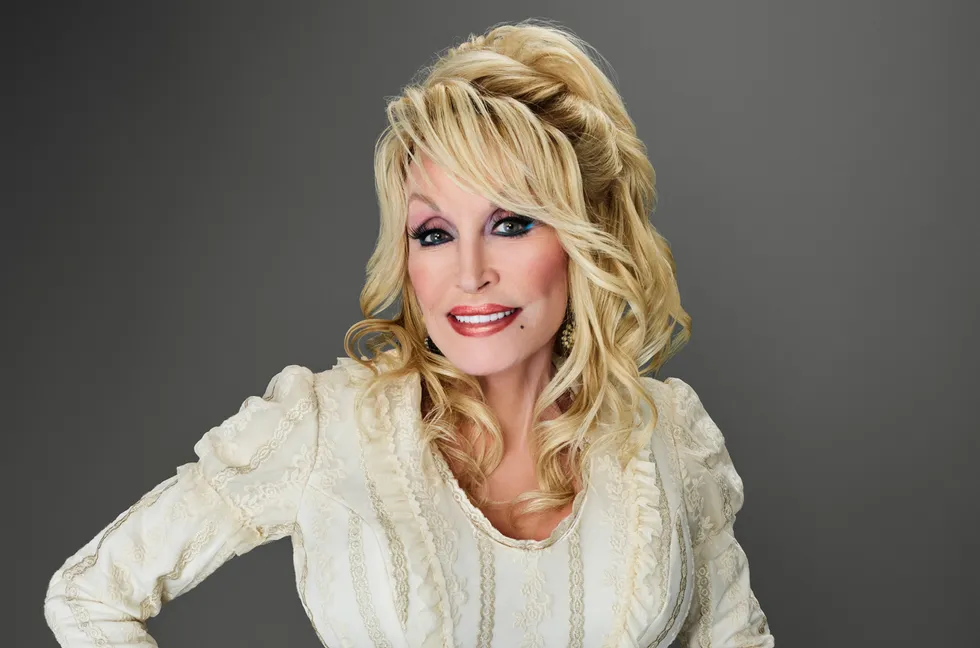

Dolly Parton
Born: 19 January 1946
Age:
Years Active: 1956–present
Genre/s: Country, country pop, bluegrass, gospel, rock
Label/s: Goldband, Mercury, Monument, RCA Victor, Columbia, Warner Bros., Rising Tide, Decca, Sugar Hill, Dolly, Butterfly
Dolly Rebecca Parton (born January 19, 1946) is an American singer, songwriter, actress, philanthropist, and businesswoman. After achieving success as a songwriter for other artists, Parton's debut album, Hello, I'm Dolly, was released in 1967, commencing a career spanning 60 years and 50 studio albums. Referred to as the "Queen of Country", Parton is one of the most-honored female country performers in history and has received various accolades, including eleven Grammy Awards and three Emmy Awards, as well as nominations for two Academy Awards including an humanitarian honorary Oscar win in 2025, six Golden Globe Awards, and a Tony Award.
Parton has sold more than 100 million records worldwide, making her one of the best-selling music artists ever. Her music includes Recording Industry Association of America (RIAA)-certified gold, platinum and multi-platinum awards. She has had 25 singles reach No. 1 on the Billboard country music charts, a record for a female artist (tied with Reba McEntire). She has 44 career Top 10 country albums, a record for any artist and she has 110 career-charted singles over the past 40 years. Her 49th solo studio album, Rockstar (2023), became her highest-charting Billboard 200 album, peaking at number three. Parton has composed over 3,000 songs, including "I Will Always Love You" (a two-time U.S. country chart-topper and an international hit for Whitney Houston), "Jolene", "Coat of Many Colors" and "9 to 5". As an actress, she has starred in the films 9 to 5 (1980) and The Best Little Whorehouse in Texas (1982), for each of which she earned Best Actress Golden Globe nominations, as well as Rhinestone (1984), Steel Magnolias (1989), Straight Talk (1992), and Joyful Noise (2012).
She was honored with a star on the Hollywood Walk of Fame in 1984, the National Medal of Arts in 2004, the Kennedy Center Honors in 2006, the Grammy Lifetime Achievement Award in 2011 and the Jean Hersholt Humanitarian Award in 2025. In 1986, Parton was inducted into the Nashville Songwriters Hall of Fame. In 2021, she was included on the Time 100, Time's annual list of the 100 most influential people in the world. She was ranked at No. 27 on Rolling Stone's 2023 list of the 200 Greatest Singers of All Time. In 2025, it was announced that Parton would be the recipient of the 2026 Jean Hersholt Humanitarian Award (an honorary Oscar).
Outside of her work in the music and film industries, Parton co-owns The Dollywood Company, which manages a number of entertainment venues including the Dollywood theme park, the Splash Country water park and a number of dinner theater venues such as The Dolly Parton Stampede and Pirates Voyage. She has founded a number of charitable and philanthropic organizations, chief among them being the Dollywood Foundation, who manage a number of projects to bring education and poverty relief to East Tennessee, where she was raised.